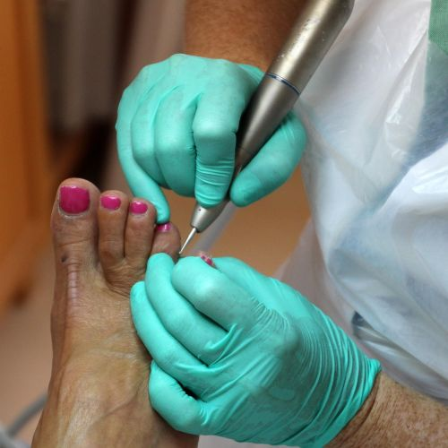

Standard Hours
Monday
7:00 AM - 11:00 AM
Tuesday
9:00 AM - 2:00 PM
Wednesday
11:00 AM - 2:00 PM
Thursday
2:00 PM - 4:30 PM
Friday
4:30 PM - 9:00 PM
7:00 AM - 11:00 AM
9:00 AM - 2:00 PM
11:00 AM - 2:00 PM
2:00 PM - 4:30 PM
4:30 PM - 9:00 PM
7:00 AM - 11:00 AM
9:00 AM - 2:00 PM
11:00 AM - 2:00 PM
2:00 PM - 4:30 PM
4:30 PM - 9:00 PM
Medical-grade foot care for individuals with diabetes and other health conditions.
We specialize in safe, hygienic foot care designed to prevent complications and promote overall health.
Restore comfort, confidence, and foot health with Chattanooga’s trusted medical pedicure care. At Medi•Pedi WELLNESS, we specialize in clinical-grade foot treatments for individuals managing diabetes, fungal nails, thickened toenails, and other health-related concerns. Our services go beyond cosmetic pedicures — we deliver safe, hygienic, and therapeutic care tailored to your unique needs. Whether you're seeking relief from painful calluses, professional toenail restoration, or diabetic-safe polish options, our licensed specialist provides gentle, medically-informed solutions in a clean, private setting.
Unlike traditional salon pedicures, medical pedicures are performed by trained professionals using sterilized tools and clinical protocols. This ensures safety for clients with compromised immunity, circulatory issues, or chronic conditions.
We proudly serve clients in Chattanooga, Red Bank, East Ridge, and nearby communities, offering personalized care that supports long-term foot health. Our clinic is equipped for non-invasive, non-cosmetic treatments that prioritize hygiene, comfort, and visible results.
My feet have never felt better! The medical pedicure was thorough, hygienic, and incredibly soothing—truly a transformative experience
Toenail restoration completely changed how I feel about my feet—clean, smooth, and beautifully natural. I finally feel confident again
This service not only beautifies your feet but also improves nail health, prevents infections, and promotes circulation—combining aesthetic care with essential wellness for long-term foot comfort and confidence
This service not only beautifies your feet but also improves nail health, prevents infections, and promotes circulation—combining aesthetic care with essential wellness for long-term foot comfort and confidence